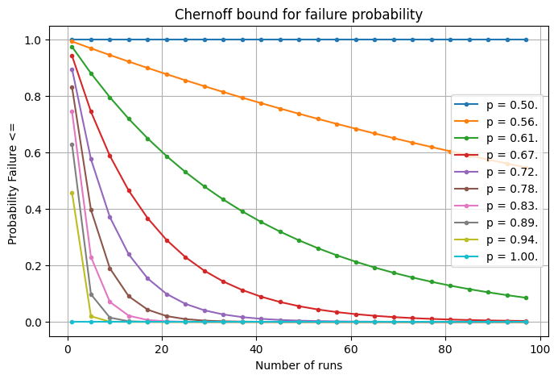
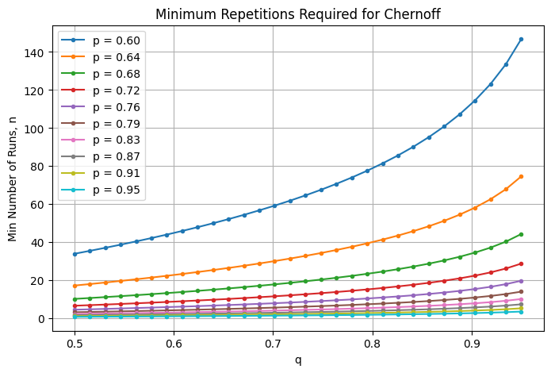
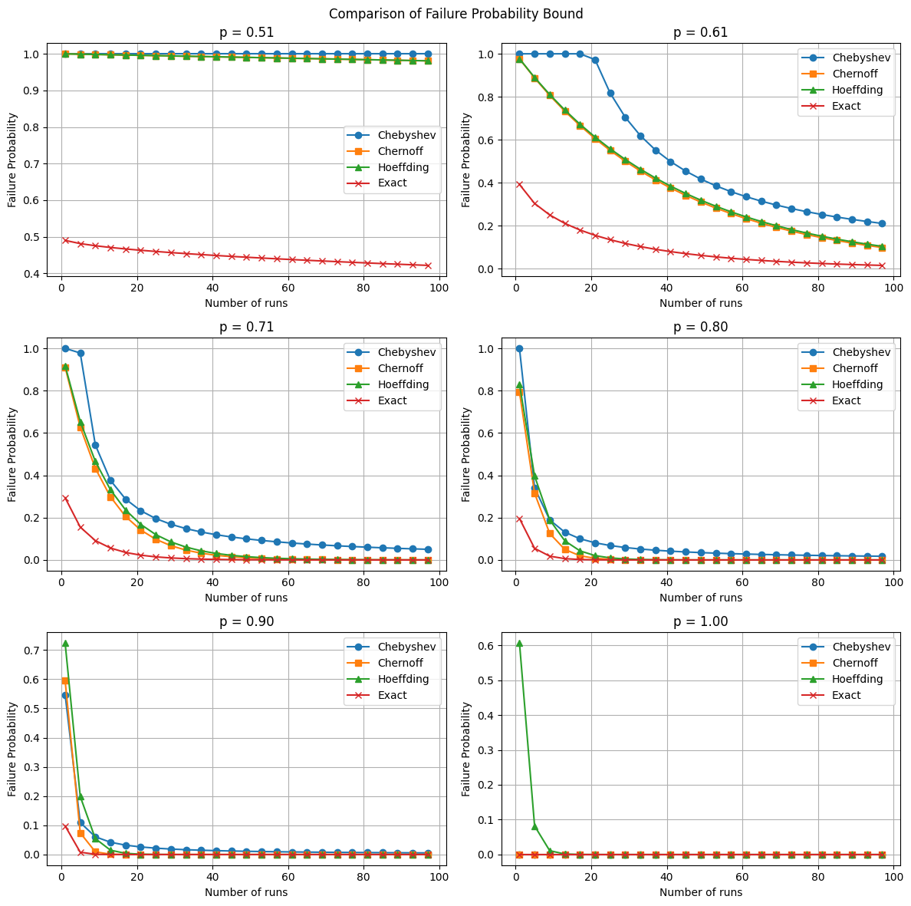
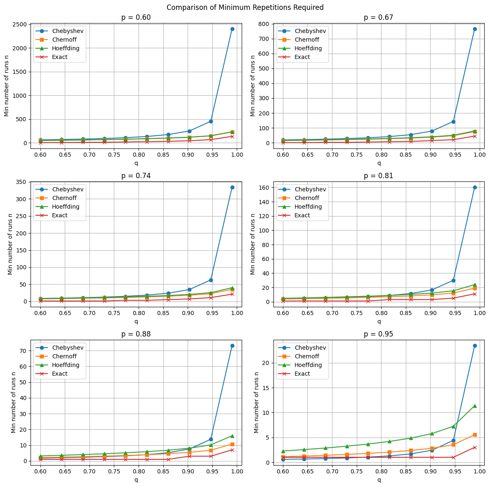

Comparison of Probability Amplification Methods based on Majority Voting
Link to Analysis
Jupyter Notebook.
Formulation
We have an algorithm \(A\) for a decision problem with probability of success \(p > 1/2\). We want to amplify the probability of success of \(A\) to \(q > p\). We achieve this by repeating algorithm \(A\), \(n\) times. Then, we bound probability of success repeated algorithm, \(A_n\) using various methods. We compare the methods based on their runtime,i.e., minimum number repetitions required and randomness required.
Repetition + Chernoff
Let \(n\) be minimum number of repetitions required. Define a random variable \(X = \sum_{i=1}^n X_i\) where \(X_i\) is random variable such that \(X_i = 0\) if algorithm \(A\) succeeds in \(i\)th iteration and \(X_i = 1\) if \(A\) fails on \(i\)th iteration for \(1 \le i \le n\). Clearly, \(X_i \sim \) Bernoulli(\(n,1-p\)). Probability that \(A_n\) fails is given by, \(\Pr[X \ge n/2]\). Using chernoff inequality,
\begin{aligned}
\Pr[X \ge t] &\le \left( \frac{E[X]}{t}\right) ^t \left( \frac{n-E[X]}{n-t} \right) ^{n-t} \\
&= \left( \frac{n(1-p)}{n/2} \right) ^{n/2} \left( \frac{n-n(1-p)}{n/2}\right) ^{n/2} \\
&= (4(1-p)(p))^{n/2}
\end{aligned}
But, we want failure probability for \(A_n = 1 - q\). Thus, \(1 - q = \Pr[X \ge n/2]\). Solving for \(n\),
\[
1 - q = (4(1-p)(p))^{n/2} \\
\]
\[
\boxed{n = \frac{2 \log (1-q)}{\log (4p(1-p))} }
\]
The following plots describe the above,


Let \(n\) be minimum number of repetitions required. Define a random variable \(X = \sum_{i=1}^n X_i\) where \(X_i\) is random variable such that \(X_i = 1\) if algorithm \(A\) succeeds in \(i\)th iteration and \(X_i = 0\) if \(A\) fails on \(i\)th iteration for \(1 \le i \le n\). Note, \( 0 \le X_i \le 1\). Probability that \(A_n\) fails is given by, \(\Pr[X \le n/2]\). Using Hoeffding Inequality,
\begin{aligned}
\Pr[X - E[X] \le -t] \le \exp (-2t^2/n) \\
\Pr[ X \ge n/2] \le \exp(-2(np - 0.5n)^2/n) \\
\Pr[X \ge n/2] \le \exp(-2n(p-0.5)^2) \\
\end{aligned}
But, we want failure probability for \(A_n = 1 - q\). Thus, \(1 - q = \Pr[X \le n/2]\). Solving for \(n\),
\[
1 - q = \exp (-2n(p-0.5)^2)
\]
\[
\boxed{n = \frac{\log (1/(1-q))}{2(p-0.5)^2}}
\]
The following plots describe the above,
Repetition + Chebyshev
Let \(n\) be the minimum number of repetitions required. Define a random variable \(X = \sum_{i=1}^n X_i\) where \(X_i\) is a random variable such that \(X_i = 1\) if algorithm \(A\) succeeds in the \(i\)th iteration and \(X_i = 0\) if \(A\) fails on the \(i\)th iteration for \(1 \le i \le n\). Clearly, \(E[X] = np\) and \(\text{Var}(X) = np(1-p)\). Using Chebyshev Inequality,
\[
\Pr[|X - E[X]| \ge t] \le \frac{\text{Var}(X)}{t^2}
\]
We want \(\Pr[X \le n/2] = \Pr[E[X] - X \ge np - n/2] = \Pr[|X - E[X]| \ge n(p - 0.5)]\), so
\[
\Pr[X \le n/2] \le \frac{np(1-p)}{n^2(p - 0.5)^2} = \frac{p(1-p)}{n(p - 0.5)^2}
\]
But, we want failure probability for \(A_n = 1 - q\). Thus, \(1 - q = \Pr[X \le n/2]\). Solving for \(n\),
\[
1 - q = \frac{p(1 - p)}{n(p - 0.5)^2}
\]
\[
\boxed{n = \frac{p(1 - p)}{(p - 0.5)^2(1 - q)}}
\]
The following plots describe the above,
Repetition + Exact
Let \(n\) be the minimum number of repetitions required. Define a random variable \(X = \sum_{i=1}^n X_i\) where \(X_i\) is a random variable such that \(X_i = 1\) if algorithm \(A\) succeeds in the \(i\)th iteration and \(X_i = 0\) if \(A\) fails on the \(i\)th iteration for \(1 \le i \le n\). Then \(X \sim \text{Binomial}(n, p)\). We want the algorithm \(A_n\) to succeed with probability at least \(q\), which means we want:
\[
\Pr[X \ge n/2] \ge q \Rightarrow \Pr[X < n/2] \le 1 - q
\]
We compute \(\Pr[X < n/2] = \sum_{k = 0}^{\lfloor n/2 \rfloor - 1} \binom{n}{k} p^k (1 - p)^{n - k}\)
To find the minimum \(n\), we numerically compute the smallest \(n\) such that:
\[
\boxed{\sum_{k = 0}^{\lfloor n/2 \rfloor - 1} \binom{n}{k} p^k (1 - p)^{n - k} \le 1 - q}
\]
The following plots describe the above,
Runtime
Now, we compare the above methods based on number of repetitions required, \(n\). The following plots give a visual comparison,


Randomness
We now compare the four methods based on the amount of randomness required to achieve the desired amplification of success probability from \(p\) to \(q\).
Chernoff and Hoeffding bounds and exact method rely on full independence of the \(n\) repetitions of the algorithm \(A\). Each repetition requires independent random bits, so the total randomness required is proportional to the number of repetitions \(n\).
This gives randomness complexity:
\[
\text{Randomness} = O\big(n \cdot R_A\big)
\]
where \(R_A\) is the randomness required per run of \(A\).
Chebyshev's inequality only requires pairwise independence among the repetitions. Pairwise independent samples can be generated with significantly fewer random bits — typically \(O(\log n)\) random bits — using constructions such as linear hash functions or polynomials over finite fields.
Thus, the randomness complexity reduces to:
\[
\text{Randomness} = O\big(\log n \cdot R_A\big)
\]
In summary, while Chernoff, Hoeffding, and Exact methods provide tighter bounds requiring fully independent repetitions, Chebyshev's method offers a trade-off by relaxing independence to pairwise, reducing randomness required.
| Method |
Number of Runs \(n\) Needed |
Runtime Complexity |
Randomness Required |
Bound Tightness Rank |
Runtime Rank |
Randomness Rank |
| Exact |
Smallest |
High (slow) |
\(O(n \log n)\) (full independence) |
1 |
4 |
4 |
| Chernoff |
Slightly larger |
Low (fast) |
\(O(n)\) (full independence) |
2 |
1 |
3 |
| Hoeffding |
Slightly larger |
Low (fast) |
\(O(n)\) (full independence) |
3 |
2 |
3 |
| Chebyshev |
Largest |
Medium |
\(O(\log n)\) (pairwise independence) |
4 |
3 |
1 |